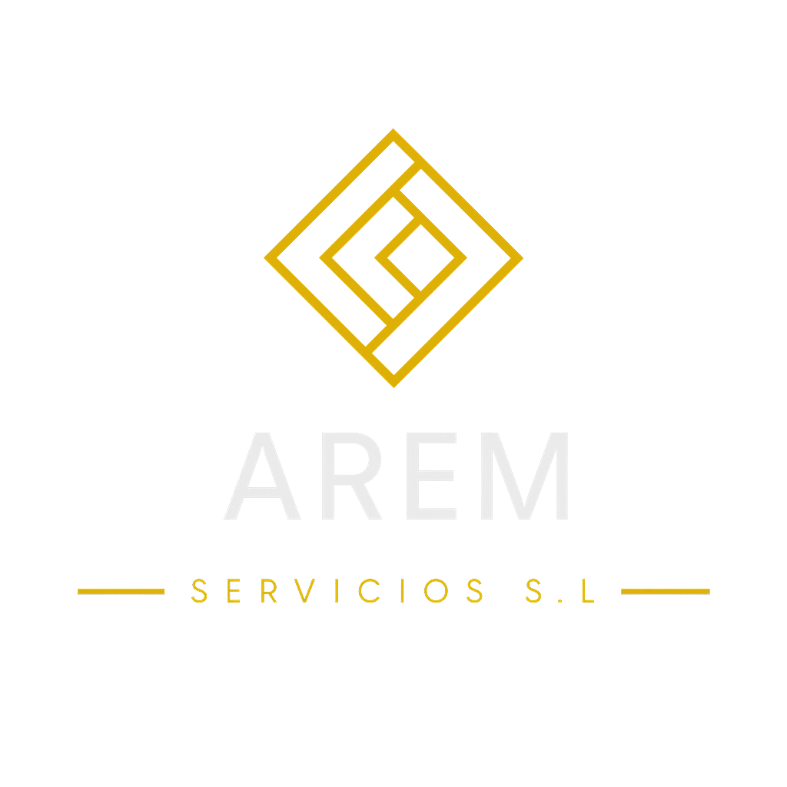

Protegemos lo que más valoras
Expertos en seguridad corporativa
Fundada por D. José Antonio Gerena España en 2024, AREM Servicios S.L. nace con el firme compromiso de ofrecer un servicio profesional basado en valores que consideramos esenciales y que estarán siempre presentes en cada uno de nuestros trabajos: la responsabilidad, la atención, la educación y el saber estar.
Nuestra filosofía se fundamenta en la implicación directa en cada evento, asumiendo cada servicio como propio y cuidando cada detalle para garantizar el correcto desarrollo del mismo. Entendemos que cada evento es único, por lo que trabajamos con máxima dedicación, seriedad y compromiso, adaptándonos a las necesidades de cada cliente y de cada situación.
Damos especial importancia a las habilidades de comunicación, al trato respetuoso con el público y a la capacidad de resolver cualquier conflicto de manera pacífica, eficaz y profesional, manteniendo siempre la calma y el control en todo momento.
Por ello, la formación continua, la disciplina y la capacidad de liderazgo del equipo de AREM Servicios S.L. son nuestra bandera, constituyendo la base sobre la que construimos un servicio de calidad, confianza y máxima profesionalidad en todo tipo de eventos.